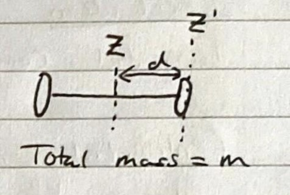
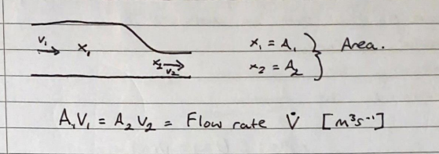
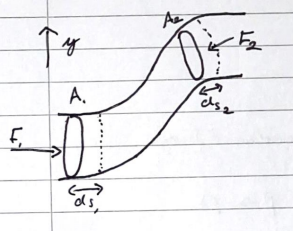
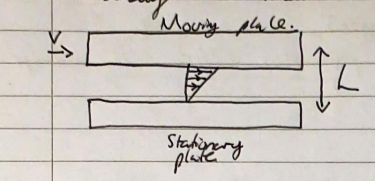

Angular velocity \((\omega)\) and angular acceleration \((\alpha)\) are \[\omega=\frac{d\theta}{dt};\;\;\;\;\alpha=\frac{d\omega}{dt}=\frac{d^2\theta}{dt^2}\] The direction of \(\omega\) is given by the right hand grip rule (thumb = direction, fingers = rotation). Direction of \(\alpha\) uses the same rule, but the fingers are the rate of change of \(\omega\).
Speed \((v)\) is: \[v=\frac{ds}{dt}=r\frac{d\theta}{dt}=r\omega\] Where \(s\) is arc length, and \(r\) is radius.
Tangential component: \[a_{tangential}=\frac{dv}{dt}=\frac{d}{dt}(r\omega)=r\alpha\] Centripetal Component \[a_{centripetal}=\frac{v^2}{r}=\omega^2r\]
Moment of inertia is a measure of how hard it is to start an object rotating. \[I=\sum_im_ir_i^2\]
For a body with multiple moments of inertia stacked symmetrically along the axis of rotation: \[I=I_A+I_B+I_C=\sum_iI_i\]

Inertia in Z = I Inertia in Z’=I’ \[I'=I_{cm}+md^2\;\;\;\;\;(cm=center \;of\; mass)\]
For a point mass: \[K_{Rotational}=\frac{1}{2}mv^2=\frac{1}{2}m\omega^2r^2\] For one particle in the system: \[K_i=\frac{1}{2}m_iv_i^2=\frac{1}{2}m_ir_i^2\omega^2\] So in total: \[K=\sum_i\frac{1}{2}m_ir_i^2\omega^2=\frac{1}{2}\omega^2\sum_im_ir_i^2\] BUT Moment of Inertia \((I)\) is \(\sum_im_ir_i^2\), so \[K=\frac{1}{2}I\omega^2\]
Torque \((\tau)\): \[\boldsymbol{\tau}=F_tl=Fr_\perp\sin(\phi)\] As a vector: \[\boldsymbol{\tau}=\mathbf{F}\times\mathbf{r}\;\;\;(cross\;product)\] You can use the right hand grip rule for the direction of torque. (\(\tau\)=thumb) From \(F=ma:\) \[\boldsymbol{\tau}=\mathbf{I}\cdot\boldsymbol{\alpha}\]
\[W=\int dW=\int \tau d\theta=\tau\Delta\theta\;\;\;(If \;\tau\;is\;constant)\] \[P=\frac{dW}{dt}=\tau\frac{d\theta}{dt}=\tau\omega\]
If a body is rolling without slipping: \[v_{cp}=v_{cm}-\omega R=0\] Where \(cp\)=contact point and \(cm\)=centre of mass, so \[V_{cm}=\omega R\]
Definition: \[\mathbf{L}=\sum_i\mathbf{r_i}\times\mathbf{p_i}\] Angular momentum is conserved in the absence of external torque. If there is a torque then: \[\frac{d\mathbf{L}}{dt}=\boldsymbol{\tau}\] If the rotation axis is an axis of symmetry then the angular momentum is: \[\mathbf{L}=I\boldsymbol{\omega}\] Precession Angular Velocity \[\Omega=\frac{\tau_y}{L_x}\] Gyroscope Equation: \[\omega_p=\frac{\tau}{L}\]
Conditions for equilibrium: \[\sum\mathbf{F}=0\;\;\;\&\;\;\;\sum\boldsymbol{\tau}=0\] Theorem: The gravitational torque acts completely through the objects centre of mass: \[\boldsymbol{\tau}_W=M\mathbf{r}_{cm}\times\mathbf{g}\]
Table of deformations (Young's modulus type stuff):
| Type | Stress | Strain | Deformation |
|---|---|---|---|
| Uniaxial (Youngs Modulus) | \(\frac{F_{\perp}}{A}\) | \(\frac{\Delta l}{l_0}\) | \(Y=\frac{F_{\perp}/A}{\Delta l /l_0}\) |
| Bulk (Bulk Modulus) | \(\Delta p\) | \(\frac{\Delta V}{V_0}\) | \(B=-\frac{\Delta p}{\Delta V/V_0}\) |
| Shear (Shear Modulus) | \(\frac{F_{//}}{A}\) | \(\frac{x}{h}\) | \(S=\frac{F_{//} /A}{x/h}\) |
Planets move in an elliptical orbit with the parent star as one of the two foci.
The areas swept out by the orbit from time interval \(\Delta t\) is identical through all positions of orbit.
\(T^2\propto r^3\), \(T^2=\left (\frac{4\pi^2}{GM}\right )r^3\), or \(T=\frac{2\pi a^{3/2}}{\sqrt{GM}}\) where \(2a\) is the diameter of the widest point of orbit.
You can use energy conservation. \(U+K=\textrm{const}.\) \[v=\sqrt{\frac{2GM}{R}}\] Following from this, the Schwarzschild radius is: \[R=\sqrt{\frac{2GM}{c^2}}\]
Pressure depends on depth, as there will be more fluid above an object the further it descends.\[p(y)=-\rho gy+p_0\]
Pascal's Principle: A change in pressure applied to an enclosed fluid is transmitted undiminished to all points in the fluid. Archimedes' Principle: When a body is partially or fully immersed, the buoyancy force is equal to the weight of the fluid displaced.
The volume of liquid through a point will exit the point. The flow rate is constant. \[\ddot V=A_1v_1=A_2v_2=\textrm{constant}\]

Along a streamline of incompressible fluid where energy is conserved: \[p+\rho gy+\frac{1}{2}\rho v^2=\textrm{constant}\] Awful proof, just learn this lol

\(\eta\) …the measure of fluid resistance.

\[F=\eta\frac{vA}{L}\] Laminar Flow \[\ddot V=(p_{in}-p_{out})\frac{\pi R^4}{8\eta l}\]